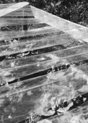
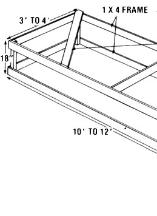
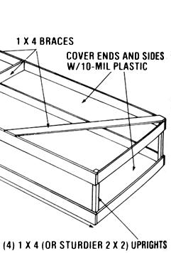

An inexpensive, easy-to-build grow-frame allows an inventive New Zealander to...
For most of us, the onset of winter means the end of freshly harvested garden produce . . . and I used to hate that! Though I've never been able to afford a greenhouse, I've always felt that I somehow had a right to homegrown salads all year round.
Furthermore, I knew that when sun strikes dark soil, it heats up the earth and the air immediately above it. So all I really needed (I decided) was a structure that would let in the rain and sun . . . shelter my plants from blasts of cold air . . . and allow enough ventilation to prevent the molds, diseases, sour soil, and moss so common to greenhouses. Of course, my invention also had to be inexpensive, easy-to-build, sturdy enough to stand up against strong winter winds, and able to coexist with the four-foot-wide, fertile beds that I'd religiously composted for five years.
A PROBABLE SOLUTION
Well, my needs and abilities finally got together, and the result was an 18"-high frame-built of 1 X 4's-that fit exactly over one of my raised vegetable patches. Its sides were enclosed in 10-mil, clear plastic (polyvinyl chloride), which was secured with tacks ("washers" made from folded bits of plastic trimmings prevent the wind from enlarging the tack holes).
Next, I cut 4"-wide strips of the same plastic, long enough to stretch across the width of the top and come down 4 inches on each side. Again using homemade washers, I tacked the strips in place-spacing them 1 inch apart-all along the frame's top. Eureka! My "New Zea land Grow-Frame" was born . . . and it worked!
The sun warmed up the soil, and the atmosphere within the structure, by a full 20°F. And, while the frame protected the plants from the wind, it also provided excellent ventilation. Rain fell readily through the spaces between the strips . . . and I could easily slip my hands through the slots to harvest, transplant, and weed.
I hate to brag . . . but my invention proved to be such a darned good way to grow things that I decided to use the frames throughout my garden. For four winters now I've enjoyed-along with lettuce-freshly picked carrots, beets, parsnips, chard, and parsley!
EXTRA BONUSES!
Even my brainchild's one possible disadvantage turned out to be an asset. I knew the plastic was bound to reduce the amount of sunshine that reached the plants . . . and less light (I had thought) would decrease photosynthesis.
Well, as it happened, the diminished light was particularly good for lettuce! It seems that moderate shading tends to limit transpiration (the loss of moisture) more than it reduces photosynthesis. Therefore, the leaves became longer, broader, thinner, tenderer, and smallerveined . . . precisely the characteristics I wanted in my lettuce.
But the assets didn't stop there! I discovered that the grow-frame also works well in summer, so removing and storing it for half the year is unnecessary. The four-season capability of the mini-hothouse was revealed when, suddenly, it was midsummer . . . and my plants-still in their winter home-were not only growing like gangbusters, but needing less water than did those in open beds.
In fact, the only time I have to water inside the frame is when I transplant seedlings. As a result, the surface soil stays dry, while the earth beneath this layer is always moist. Furthermore, the interior of the frame is never too humid, so that nasty "brown rot" can't attack my lettuce.
In addition, when the wind flutters the plastic strips, it actually sets up afield of static electricity which, some say, stimulates plant growth. (For more about this, see the work done on electrical fields by L.G. Lawrence as reported in The Secret Life of Plants by Peter Tompkins and Christopher Bird, Harper & Row, 1973, $12.95.) True or not, I've certainly raised some happy-looking vegetables!
QUITE AN IMPROVEMENT
|
 |
 |
 |